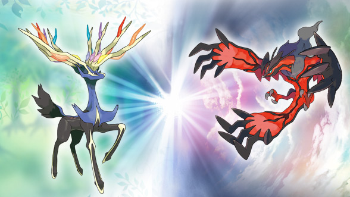

Number 10: Pokémon X and Y

Played: 9 to 10 years old
For most of my childhood, I was heavily invested in the franchise
titled "Pokémon". From the anime to the trading cards, I knew much of
the already existing story. However, my first experience with the
Pokémon games was Pokémon X and Y. Despite getting some criticism for
the new 3D models and new Pokémon, I always hold this game close to my
heart because of the challenges, enjoyment, and satisfaction I faced
from beating the game multiple times and investing in new Pokémon
teams.
Number 9: Call of Duty: Black Ops 2

Played: 8 to 11 years old
Call of Duty: Black Ops 2 became one of my most favorite Call of Duty
games solely because of the amount of fun I had with it! For one, this
game offered a lot of custom gamemodes, such as "infected" and 1v1
templates. In addition, the developers opted to provide a co-op
gamemode called "Zombies" that allowed me to play and collaborate with
a part of 4 players, including my cousin most of the time! Even if
other Call of Duty games came out, Call of Duty: Black Ops 2 was one
game that I always went back to and enjoyed.
Number 8: Destiny
Played: 10 to 12 years old
When I say that Call of Duty: Black Ops 2 had a lot of replayability,
I should also mention Destiny! For one, Destiny as a game had a lot of
issues with the story and became the pinnacle of criticism for a
Triple-A game at the time. However, the sheer amount of content
provided a lot of fun despite the amount of grinding you would have to
invest for a well built character. One of the most iconic modes for me
were the multiplayer gamemodes as well as raids. Raids in Destiny
forced you to team up with 5 other people and complete a sequence of
challenges, gimmicks, and bosses for extremely rewarding loot. The
cooperation and difficulty of these raids allowed for a lot of
replayability and enjoyment during the time I played!
Number 7: League of Legends
Played: 11 to 18 years old
League of Legends gets a lot of slack for it's infamous playerbase,
and I can confirm the toxicity. Not that I have ever been toxic in my
whole time playing this game, but player behavior was definitely a
problem. Despite that, I grew up with this game from 7th grade to 12th
grade and had a lot of fun with the friends I used to play with. The
ranked system in this game, despite stressful, gave me a goal to grind
for and ended up becoming really satisfying once I reached it. For me,
nothing beats getting off of a long day of school and ruining your day
even more by playing League of Legends.
Number 6: Roblox
Played: 10 to ~ years old
When I think about games that got me hooked for it's sheer diversity
and interactibility, Roblox is one that comes to mind. The gameplay is
simple, yet developers can make it fun with multiplayer-based maps and
community generated levels of all genres. Not to mention, Roblox with
friends is an even more fun experience because of the amount of co-op
games there is. For me, I enjoy playing horror based maps with a bit
of a scare!
Number 5: Minecraft

Played: 11 to ~ years old
One of the first games that I played and binged was Minecraft! From
YouTube playthroughs to iPad gaming with the release of Pocket
Edition, I was heavily hooked onto the playability and refreshingness
of the Minecraft world! For much of its earliest release, one of the
main goals of many players, including me, were to make the most out of
yourself and the world you inhabit. Mining, for example, was a
satisfying hobby, especially when you finally equip a full gear of
weapons and armor! Later on, servers would be developed and I would
get hooked into the idea of player PVP and many other minigames. In
addition, it had provided me a way to relax after a long day of
school!
Number 4: Overwatch 2
Played: 18 to ~ years old
Going into the top 4 will be games that I have been playing recently
(recency bias)! One of these games include Overwatch 2. Having played
League of Legends for a long period of time prior to my start in
college, I became burnt out with MOBAS and sought for a new
competitive genre. The hype and release of Overwatch 2 brought a new
game that I found fresh and exiting whilst also bringing a competitive
nature. I thoroughly enjoyed the first-person shooter aspect in a team
based game while having the ability to learn a new skillset given the
different characters involved.
Number 3: Honkai: Star Rail
Played: 18 to ~ years old
Another game that I have been heavily invested in recently is Honkai:
Star Rail! As of recently, this game has given me an addiction to the
idea of turn based strategy games. Even if it is classified as a gacha
game, there is some level of strategy involved in managing your
currency for the next character you want, as well as applying them in
teams and battles. Not to mention, the story has delivered so far with
great character introductions and a plot that keeps on expanding.
Maintenance-wise, the developers keep on providing quality of life
updates that enhances the player experience. This game does not need
as much time investment as others, and you could complete all the main
events on your own time. If not for the next two games, Honkai: Star
Rail would have been my favorite game so far given the handle,
passion, and care the developers had put into it!
Number 2: Baldur's Gate 3
Played: 18 to ~ years old
Having played Baldur's Gate recently, I can tell you for sure that
this game has far surpassed my expectations! For starters, the
character customization provides way too many features to keep count
of in designing your very own character. Gameplay wise, Baldur's Gate
3 takes elements from Dungeons and Dragons and converts it into a game
with heavily emphasized decision-making and choices that makes it feel
like it is an open world! One thing I heavily enjoy about this game is
the handling of side characters and companions. The developers have
designed an intricate system that ties your character's choices with a
reputation system affecting the way other races may see you. Fantasy
RPG elements are heavily brought out and the combat shows the
inspiration of D&D with the complexity of a well-developed storyline.
From the handle, precision, and passion Larian Studios put into
Baldur's Gate 3, I wouldn't be surprised if it was the winner of this
year's Game of the Year award!
Number 1: Elden Ring

Played: 17 to 18 years old
Of all time, my favorite game has got to be Elden Ring! Putting in
almost 200 hours into this game, the replayability always got me
coming back into the storyline, gameplay, and epic boss battles. Being
an open world game, Elden Ring gives you a lot of freedom in handling
the story based on your own choices and decisions. There is no wrong
way of playing this game because of the amount of paths you could take
to get to the later areas and mobs! Having been developed by
FromSoftware (the developers of Dark Souls, Bloodbourne, and Sekiro)
the gameplay of Elden Ring felt extremely fresh for someone that has
never touched the prior titles. The character customization may not be
as good as in Baldur's Gate 3, but the weapons and build possibilities
makes you heavily invested into turning your character into an
absolute beast! I heavily recommend this game to anyone willing to
experience an extremely hard game. From my own experience, the
difficulty factors into my personal enjoyment as it brings a great
level of satisfaction in overcoming the numerous challenges! Overall,
it is no surprise to me that Elden Ring won last year's Game of the
Year Award!